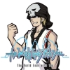
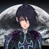

Colaboraciones
En esta sección listaré las personas con las que he colaborado y en que juegos. Pondré primero las traducciones en las que he sido colaborador (las que podeis ver a la izquierda tras el pequeño separador, de Tales-tra no pongo los nombres porque son MUCHA gente), junto con las personas a las que ayudé en ese caso, y luego pondré qué otras personas me han ayudado en mis traducciones.
Tales of Destiny
Participé como traductor, revisor y uno de los testers principales junto a otros muchos compañeros. Id a la web para verlos a todos.
Fragile Dreams
Participé como traductor y revisor junto con:
|  | TioVictor |
| Organizador de la traducción, traductor de gráficos y textos, tester y revisor. |
| Xulikotony | |
| Traductor, revisor y tester. |
|  | Pacochan |
| Hacker, traductor y tester. |
El Mago de Oz
Participé como tester junto a otras muchas personas. Para verlas todas, es mejor visitar la propia web del proyecto, en el panel izquierdo.
Ayudas
Personas que me han ayudado, mucho o poco, pero lo bastante para mencionarlas y que se lo agradezca aquí.
| Pacochan | |
| Salvo con Metroid y Metroid II, me ha ayudado en todo, y sigue haciéndolo. You rock =D. |
| Lex | |
| Me ha ayudado mayormente con Fire Emblem, pero me ha dado consejos en tantos otros. También me hace ser ateo, pues sé que ningún dios (ni un primigenio) crearía a una abominación como él. |